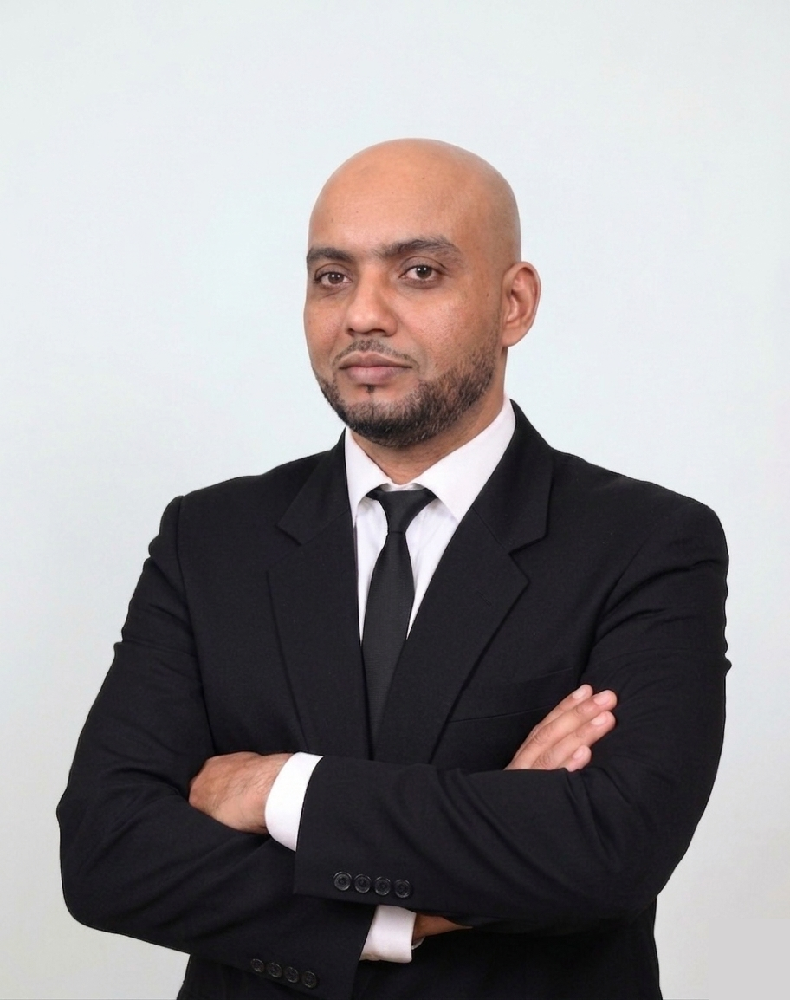

Transformez vos données brutes en insights actionnables. Spécialiste en analyse de données, visualisation interactive et machine learning pour orienter la prise de décision stratégique.

Data Analyst avec une solide formation en économie, finance et gestion de projets digitaux
Je suis un Data Analyst basé à Agadir, Maroc, avec une expertise en analyse de données, business intelligence et machine learning. Ma formation en économie et finance me permet d'apporter une vision stratégique à chaque projet.
Je maîtrise les outils d'analyse moderne comme Python, SQL, Power BI et Tableau, et j'ai une expérience concrète dans la transformation de données complexes en tableaux de bord interactifs et en modèles prédictifs.
Mon objectif : aider les entreprises à prendre des décisions éclairées basées sur les données.
SQL Server, PostgreSQL, modélisation relationnelle, ETL/ELT
Pandas, NumPy, Scikit-learn, Matplotlib, Seaborn
Power BI (DAX, Power Query), Tableau, Excel avancé
Régression, Classification, Clustering, Feature Engineering
Découvrez mes réalisations en analyse de données et intelligence artificielle
Sales & Customer Analytics
Conception de deux dashboards interconnectés pour l'analyse de la performance commerciale annuelle avec KPIs dynamiques, tendances des ventes et analyse de fidélité client.
Machine Learning & Pricing
Analyse de plus de 300 000 réservations aériennes pour identifier les facteurs clés de prix. Pipeline complet EDA, tests statistiques et comparaison de modèles (XGBoost, Random Forest).
Modélisation Économétrique
Modélisation structurelle vectorielle autoregressive (SVAR) pour analyser les corrélations entre le marché des obligations vertes et autres marchés financiers.
Sur Github
Vous pouvez consulter mon GitHub pour voir tous les projets que j'ai réalisés
Mon parcours en analyse de données et gestion de projets digitaux
Vous avez un projet data ? Discutons de la façon dont je peux vous aider à transformer vos données en succès.